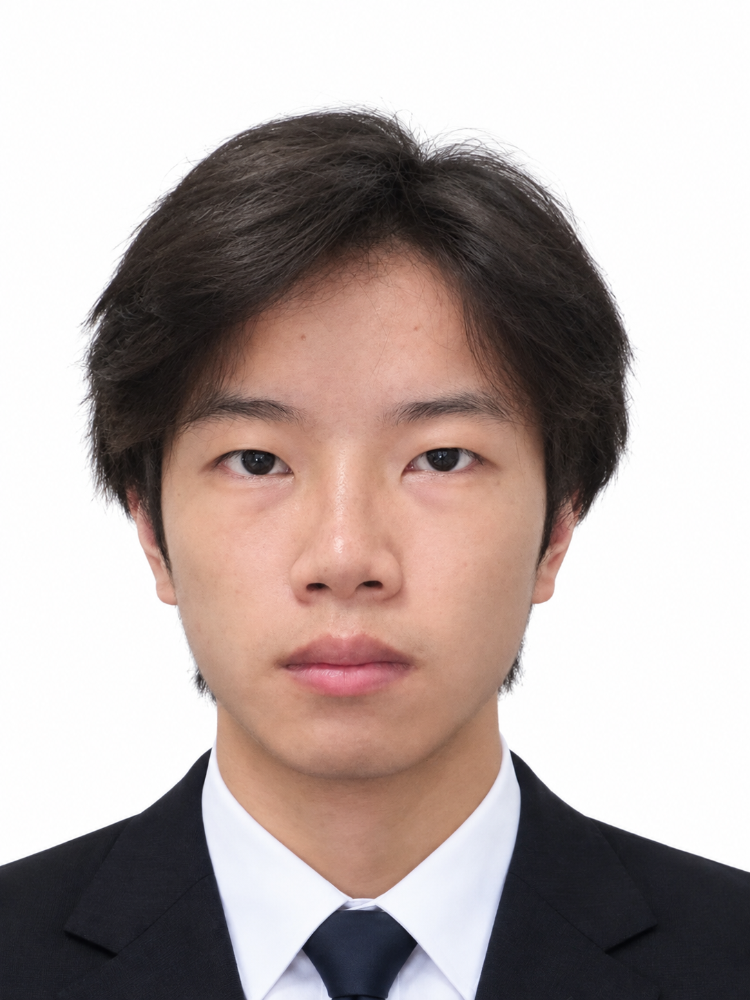
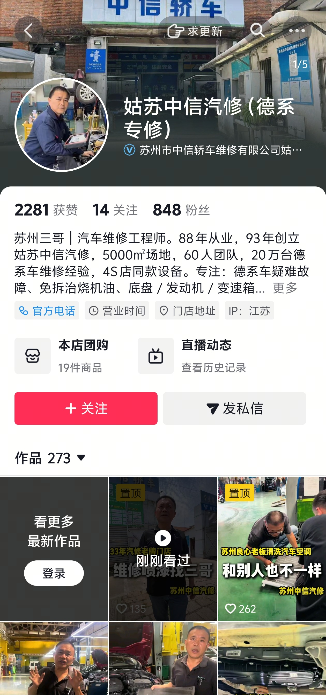
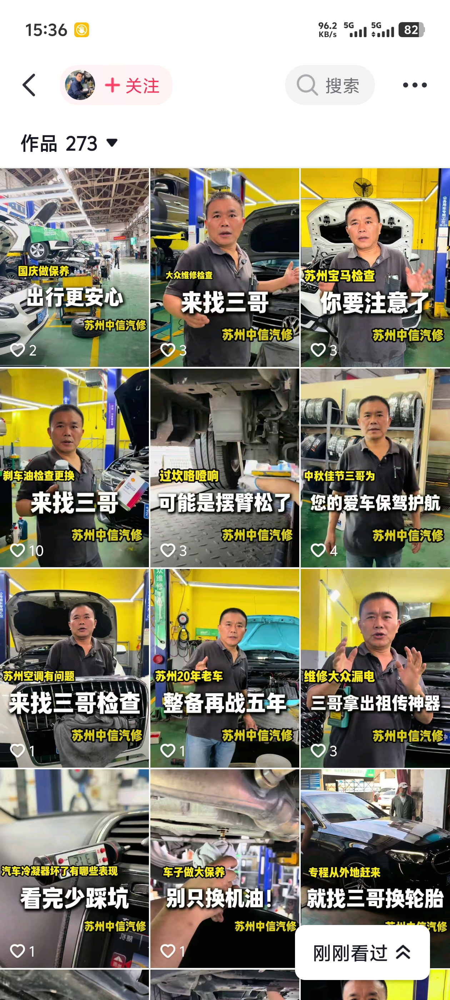
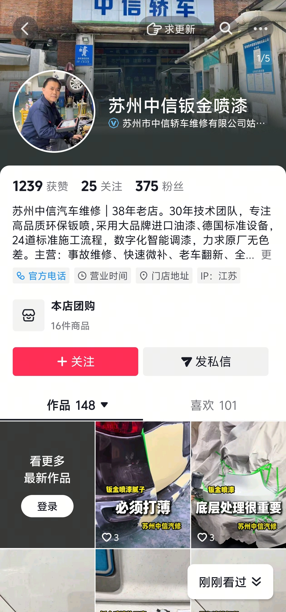
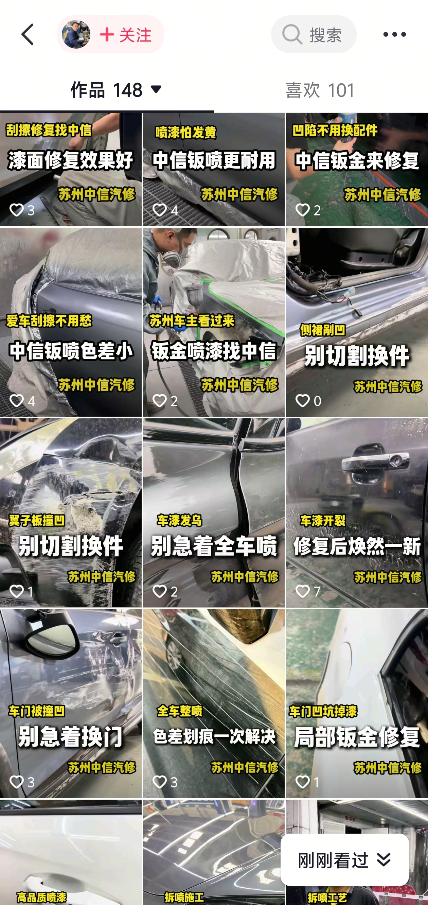
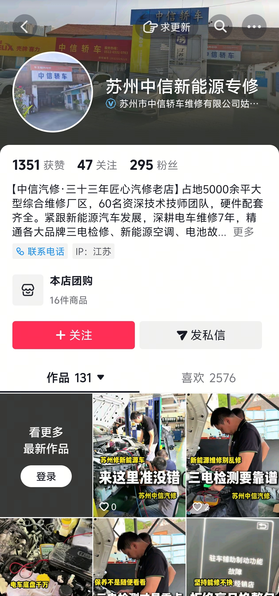
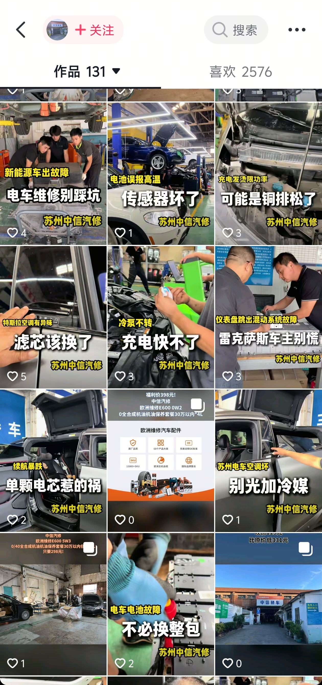
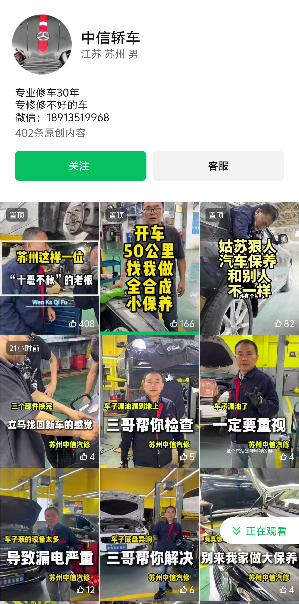
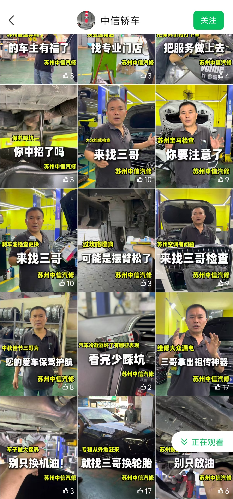

一个人跑通过一条 AI 短剧生产线，也一个人扛过门店 5 账号矩阵的日更。不躺平在夕阳专业里等分配，用作品说话。
练摄像机、PR、PS，拍剪作业不断线。
判断传统媒体风向，主动抓 AI 风口，跑通从脚本到成片的生产线。
因踏实被负责人单独选中加训，外派跟师一周。
一个人扛下 5 账号日更内容，第一次明白工作和学校不一样。
学校 + 政府 + 企业三方合作 AIGC 项目。我负责第 13 / 14 / 15 / 58 集：脚本提示词优化 → 豆包生成 → 剪辑成片。
33 年老店（5000㎡、60 人团队、老板「三哥」IP）。我被外派独立负责内容：车间实拍约 1 小时、回去逐条剪，一天产出 4 条，双平台日更，统一黄标签 + 大标题封面体系。








账号成片（实拍 + 剪辑 + 封面包装）：
课设作业、个人 vlog、其他成片。后续新作品持续补充在这里。
通读大纲与世界观，确认每集节奏
脚本拆成画面提示词，调优指令
批量生成画面，筛选可用镜头
节奏、音效、字幕，输出成片
游戏直播号做到 500 粉卡住——内容没记忆点，观众滑进即走。重做一次，我先改主播的沟通方式：人留不住，切片再剪也没用。
5 个账号要一眼被认出来：统一黄标签 + 大标题封面体系。单条爆款是运气，统一感才是资产。
成片质量的分水岭不在生成，在提示词优化——脚本拆得越准，废片越少。
坐标杭州，找短视频运营 / 账号运营岗。